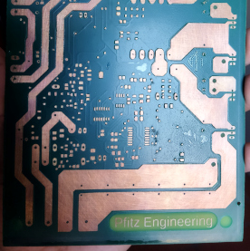

More about our projects.
We aimed to provide a solution for local electronics designers. Many engineers and technicians design circuits for various projects, repairs, or modifications but struggle with implementation due to the lack of local PCB manufacturers. As a result, some resort to homemade solutions, which come with significant limitations. These include difficulties in working with surface-mounted components, the absence of through-hole plating for vias in double-sided boards, and the lack of solder masks, making soldering—especially with reflow ovens—more challenging.
To achieve 20 mil traces and 30 mil clearances required for SOIC, SOT-23, and 0603 packages, we sought a high-fidelity, repeatable process that prioritized precision and consistency over operator skill—an essential factor for scalable production. Additionally, we required a solder mask to facilitate easier soldering.
Our research led us to photoresist materials for masking during PCB etching, utilizing UV photolithography to transfer circuit designs onto stock PCB material. We sourced photoresist materials from China for testing and conducted extensive experiments to optimize each stage of the process. This included surface preparation, photoresist coating and curing, UV exposure, image development, etching, and solder mask application. Through meticulous testing and documentation, we refined the process parameters to achieve consistent, high-quality results.
Furthermore, our research extended to developing an effective method for through-hole plating. Given the complexity of this process—requiring precise chemical treatments and multiple steps—we conducted rigorous trials and systematically documented the optimal conditions. As a result, we successfully established a well-documented, fine-tuned process to meet our manufacturing requirements.
In our quest to support innovation and creativity, we embarked on developing prototypes for various electronics and mechanical projects. One such project is a toroidal inductor/transformer winding machine designed to simplify the production of these components. Current transformers can have around 2000 turns in the secondary winding, making manual winding impractical. To address this, we conceptualized and designed a solution, creating various parts in SolidWorks and bringing them to life through 3D printing.